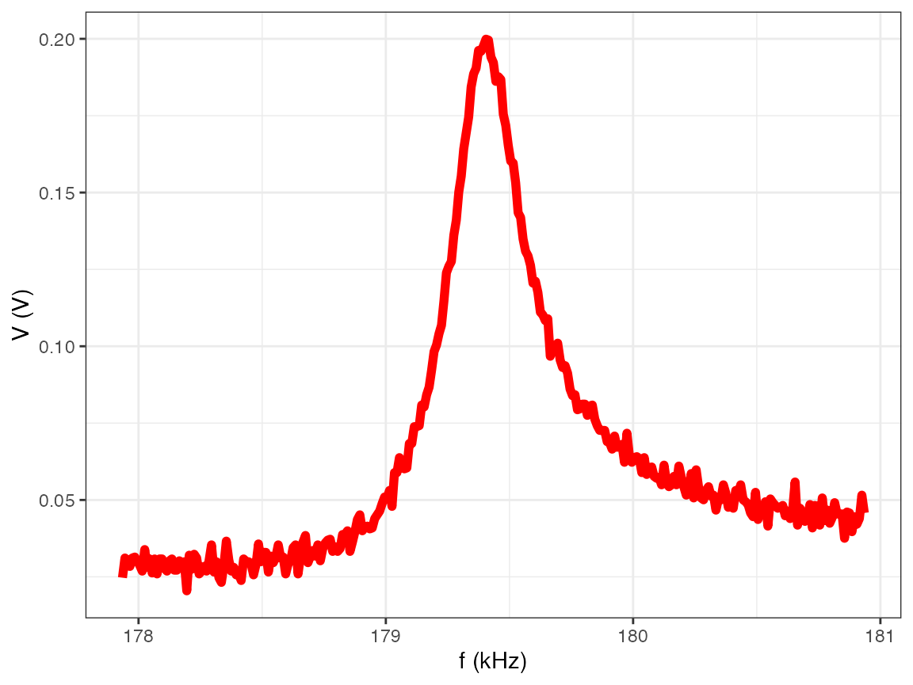

Find all the frequency sweep files:
library(nanoAFMr)
#> The legacy packages maptools, rgdal, and rgeos, underpinning the sp package,
#> which was just loaded, will retire in October 2023.
#> Please refer to R-spatial evolution reports for details, especially
#> https://r-spatial.org/r/2023/05/15/evolution4.html.
#> It may be desirable to make the sf package available;
#> package maintainers should consider adding sf to Suggests:.
#> The sp package is now running under evolution status 2
#> (status 2 uses the sf package in place of rgdal)
filesAFM = AFM.getSampleImages()
freqAFM = filesAFM[sapply(filesAFM, function(x) { (AFM.dataType(AFM.import(x)) == 'frequency') })]You can import the frequency file as an AFMdata file
using the standard import function. Graphing also works with the
plot.AFMdata() function.
a = AFM.import(freqAFM[1])
plot(a)
#> Graphing: Frequency sweep
print(a)
#> Object : NanoSurf AFM frequency
#> Description : Aspire CT170R-25; 179.405kHz; 284mV; 15-02-2012; 21:23:59
#> Channel : Frequency sweep
#> Resolution : 177935 Hz - 180935 Hz
#> History :
#> Filename : /private/var/folders/bz/zk25f6614w5b3_f61czs2dtc0000gr/T/Rtmpj5QJiL/temp_libpath85c5e7d5c0c/nanoAFMr/extdata/NanoSurf_resonancePeak.nid
summary(a)
#> objectect description
#> 1 NanoSurf frequency Aspire CT170R-25; 179.405kHz; 284mV; 15-02-2012; 21:23:59
#> resolution size channel history z.min z.max z.units
#> 1 301 177935 - 180935 Frequency sweep 148 179405 Hz
#> dataType
#> 1 frequencyYou can extract the data from the graph using the
AFM.raster() function:
d = AFM.raster(a)
head(d)
#> freq.Hz z.V
#> 1 177935 0.02471924
#> 2 177945 0.03112793
#> 3 177955 0.02899170
#> 4 177965 0.02838135
#> 5 177975 0.03112793
#> 6 177985 0.03143311